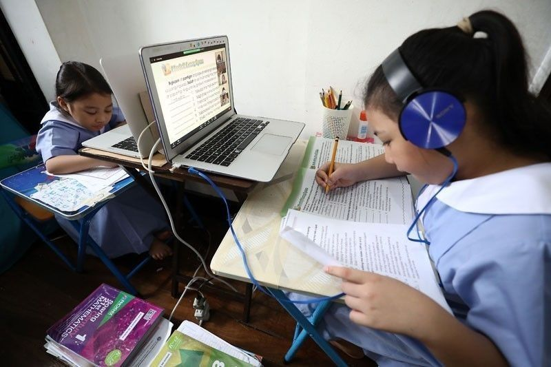

INTELLIGENT
BEINGS
BEINGS
Have you ever gone to an online class just to play a game behind the screen? In most cases the answer is yes. Why?
Many students prefer face-to-face classes because they’re not as boring as online classes, and many would prefer to relax during
suspension. Some students find it difficult to focus in class depending on their environment, whether someone's having a party next
door or their siblings being noisy. That’s why I believe studying in a classroom is better. It helps students concentrate, interact
with others, ask questions, and understand lessons more clearly in real-time.
In a classroom, it’s much easier to stay focused. There’s a teacher right there, making sure everyone pays attention. If you don’t
understand a topic, you can ask questions right away. Plus, there are fewer distractions compared to online classes. At home you
might have your phone, games, or other things to distract you. For example, when I have an online class, I sometimes check social
media or start playing games secretly in the background. In a classroom, it’s harder to get away with that, and it keeps everyone
on track. When you’re physically present, you’re less likely to get sidetracked by random stuff around you.
Another reason classroom learning is better is because students can interact with other people. When you’re in school, you can talk
to classmates, make friends, and work together on projects/tasks. This helps you build teamwork and communication skills that you
can’t really get from online classes. It also makes learning more fun because you don’t feel alone behind a screen. For example,
group activities and class discussions help everyone share ideas and understand lessons better. In online classes, it’s harder to
connect with others because everyone is muted or has their camera off.
Students also understand lessons better when they study in a classroom. Teachers can explain topics more clearly and give examples on
the board, which helps a lot. If someone doesn’t get the lesson, they can easily raise their hand and ask for help. In online classes,
it can be harder to speak up or sometimes the internet connection gets in the way. When you’re learning in person, you can see the
teacher’s expressions and demonstrations, making it easier to understand complex topics. Face-to-face learning helps students stay
engaged and learn faster because they get real-time feedback and support.

Overall, studying face-to-face is better and more recommended than studying online. It helps students focus more, communicate with
others, and understand lessons clearly. While online learning may be easier for some people, classroom learning gives students the
full experience of school. Being around teachers and classmates makes learning more fun and effective. That’s why I believe face-to-face
classes are always the best way to learn.
Bullying has always existed, both online and in real life, but one question remains, are schools doing enough to prevent it?
Schools have posters and assemblies about anti-bullying and punishments, but do they really listen? Many students feel somewhat unheard
about reporting their trauma, resulting in schools not doing enough.
A problem all students face is the fear of speaking up because they either feel somehow threatened by their bullies or fear being ignored.
Even when students report bullying, some teachers somehow ignore them or tend to fail to report this. The lack of support towards these
students can make them feel powerless or discourage them from seeking help. Studies show that students who feel powerless usually
develop anxiety, depression, and low self-esteem.
Schools focus on defending against bullying when it has already happened. Defending against bullying before it has already started or,
better, when it has just started is more important. Many schools focus on punishment instead of teaching students how to show kindness
and treat others respectfully. Avoiding punishment and providing group activities and lessons about kindness can help students become
more caring and supportive. Teaching students how to handle anger and solve problems without hurting others, they are less likely to bully.
Schools try to stop bullying with posters, assemblies, and giving punishments to those who bully, but sometimes these are not always good
enough. Even though rules are set, many students still report bullying, and sometimes it doesn’t get solved. When students feel that no
one is paying attention, bullying tends to get worst this leads to their grades and confidence getting affected. Posters and assemblies do
not fix the problem of bullying. School needs personnel who watch closely, listen to students, and step in whenever needed.